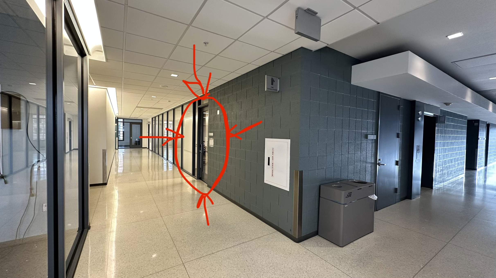
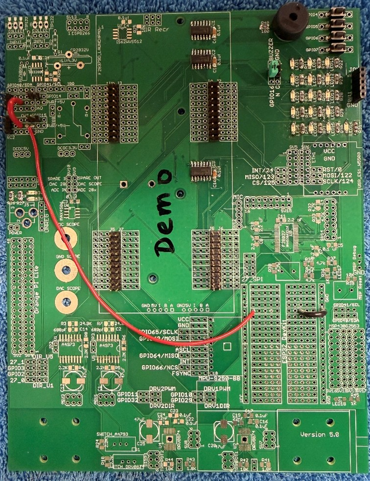
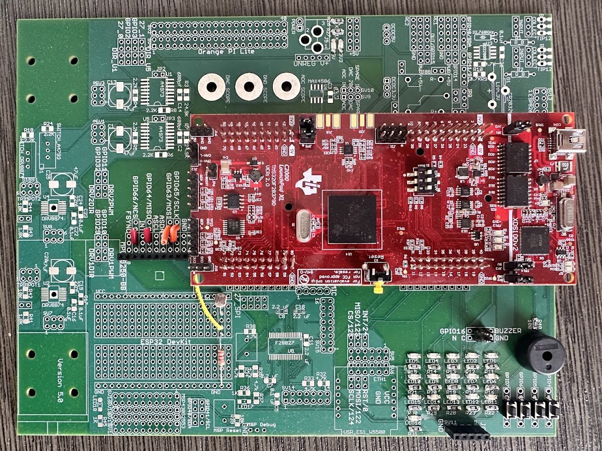
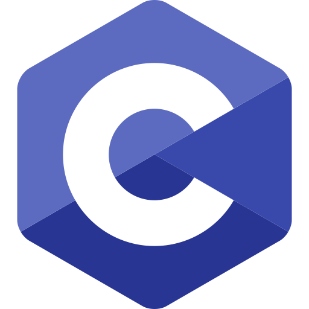
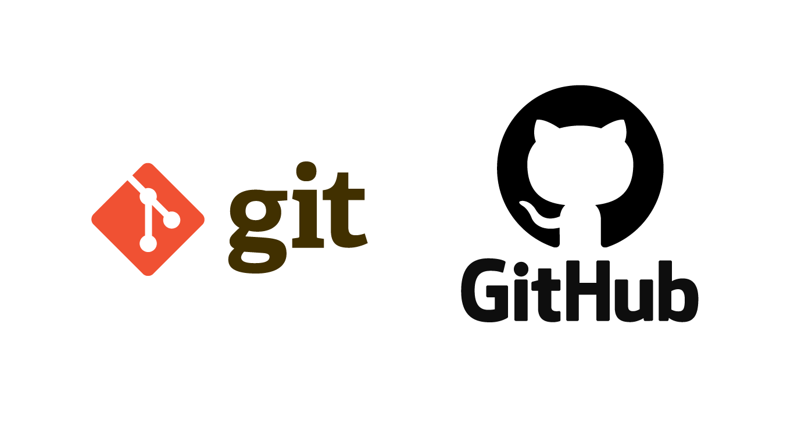

1. SE 423: Introduction to MechatronicsLecture 1: IntroductionMarius Juston
Wednesday January 21th, 2026
Speaker notes
My name is Marius Juston, a PhD candidate in the ISE program. You can call me Marius or Professor, whichever you prefer!
This class will be different from others you might have had, with a lot of learning-by-doing. In the lab and in homework,
2. Course Information
Lectures: Monday and Wednesday 9:00am-9:50am
Locations:
- Lecture: Here!
- Lab: ECEB 3080
The Team:
- Marius Juston: Instructor
- Dan Block: Lab Instructor
- Lakshmi Manoj: TA
- Samuel Folorunsho: TA
Office hours: announced and posted on Canvas when finalized.
Recordings: Available on Illinois Media Space. Link available on course webpage

3. Course Information
Canvas: https://canvas.illinois.edu/courses/64094
- Will post the lecture slides
Gradescope: https://www.gradescope.com/courses/1232277
- Should have already been automatically enrolled.
Recordings: Available on Illinois Media Space. Link available on course webpage
Most important link: https://coecsl.ece.illinois.edu/se423/
- You will be using it very often this class, has the HWs, labs and final project documents
Converted documents in LaTeX:
4. Syllabus and evaluation
Syllabus: see course website
Course deliverables:
- Check-off on all labs 30%
- Homework 25%
- LabVIEW Assignments 5%
- Quizzes 5%
- Semester Project 35%
Check-offs will be discussed later.
5. The Class - Intro
- Very different from others you might have had, learn-by-doing!
- No “hard” theory being taught.
- You will start immediately, with lab this week.
- Working on some soldering and setting up your HW board!
- You get to keep the board afterwards.

6. The Class - The “Red Board”
- What are you going to be doing with the Red Board?
- Playing with LEDs, push buttons, light sensors, RC servo, microphone, IMU
- Texas Instruments Digital Signal Processor (DSP) running at 150 MHz
-
- Arduino at 20–40 MHz
- 16-bit and 32-bit integers, only
- Floating-point capabilities
- You get to keep it for future mechatronic projects!

7. The Class – C Programming
Who here knows how to program in C?

8. The Class – C Programming
- This class will be using the C programming language to code the embedded system
- You will not be taught C, you will have to learn by yourself
- Plenty of people have come in this class and have had near zero programming experience and have done fine, if you do the work.
- This week you will not be doing C programming
-
- Next week you will, so be sure to brush up / start learning it!
- You will not be doing anything complicated in the language
-
- minimal pointers usage
- No special structures such as graphs, trees, linked-lists, etc.
- Be especially familiar with the printf, especially useful in troubleshooting!
9. The Class - Goal
- By 2/3rd through the semester you are done with the HW green board ( not the Red Board )
- Really going into HWs at the beginning of the semester
- Gradually teaching you the robot car in Lab
- By the end of the semester, you are going to be programming robot car to autonomously:
-
- Path Planning: Go from A to B, with or without a map
- Sensing and Perception: Use LiDAR, camera to make real-time decisions
- Control Systems: Implement control loops (PID)
- Groups of 3-5 people.
- Participation is graded, so be sure to be able to contribute!
- Learn how to learn to program a microcontroller!
-
- Be able to read documentation and apply the documentation
10. The Class - Goal
- We have a long way to go!
- Do all these things scare you a bit? That is good, we will teach you a lot of material by the end of the semester!
- We do not sit here and teach theory;
-
- We are not going to teach you why a PI controller is stable,
- Why the A* star algorithm is optimal
- We are going to tell you: “let us implement this algorithm”.
- We are going to talk a lot about implementation.
-
- How do we make sure that this is the circuit board?
- Most of the code will be running on the little processor. It runs at 150 MHz, which is fast for an embedded system.
11. The Class – AI Content
- You will never start with a blank C code file; you will always have a starter code.
- For all your HWs, you will always have a starter code file for each HW, which will be added to this project with the C code you need.
- Students are allowed to use AI tools to help with their work, primarily for brainstorming, debugging, and conceptual support;
-
- avoid for whole-code generation, especially if you are a beginner software engineer
- Learn by doing!
- If you use AI tools, you should understand it, be able to explain it in detail, and be able to re-implement it without using AI. You are here to learn, not just copy and paste!
- You are expected to comment the lines that have been copied and pasted from AI with code comments stating the AI model used at the lines that have been copied and pasted.
12. The Class – The first lab
- Recommend you bring your laptop to lab so that you can install the software we will be using:
-
- CodeComposer v12x (the testing of the v20x is still under process)
- Bring your I-Card to the lab this week to obtain lab access.
- You will have 24-hour access to the lab, and you can take your board home.
- You will be in groups of 2 working together.
Do not come late to labs!!!
We do not want to have to start docking points for attendance!
- Please try to read them beforehand. It will make things easier for you and speed things up, making things much quicker between you and your lab partner.
13. The Class – Homework 1
- There is a high-level frustration in this class. Working with hardware and software takes a lot of time, especially if you are completely new to this.
- Asks C programming questions, with a link to a Linked-In class to teach you more-or-less all you need for this class.
- Get started early!
- We do not mind you working on the HWs together.
- We do not want to see is identical C code.
-
- Individual comments in your code to explain what you just did, put your initials at the beginning of the line
14. The Class – LabVIEW Assignments
- Used for visualization, real-time GUI to visualize the robot’s coordinates
- Trying to convert to Python instead,
- You can get started right now:
-
- Install it in WebStore ( can take up to 4 hours to install so be carefull )
- Use CitrixWorkspace (EWS workstations)
- Get started early on it as well, already used in Lab 2
- All straightforward, just follow the videos and copy the image inside the assignment document
- Only checked for completion.
- LabVIEW 3 and 4 are optional
15. The Class – Check-offs
- Throughout the assignments (labs, HWs, LabVIEW) you will be asked to show checkpoints to the TAs
-
- Show something working
- Answering a question
- Both you and your teammate MUST be present for these checks. You will be asked to do the checks at another time otherwise.
- Contact instructors, TAs to schedule another time.
16. The Class – Code Submissions
- You will submit your commented code in Gradescope
-
- If you do not you will have points taken off
- Compile assignment as PDF
- Answer any other questions inside the assignment
// cpu_timer1_isr - CPU Timer1 ISR
__interrupt void cpu_timer1_isr(void)
{
CpuTimer1.InterruptCount++; // MJ: Increments the timer's internal interrupt counter
}
17. The Class – Git
- You will be using a version control (think of it as a backup system) called “git”
- For it to be effective, be sure that you are “committing” and “pushing often! If you do not, then you will most likely lose your data
- You are sharing the machines with all the sections; it is HIGHLY probably someone will accidentally change your code. ( yes, it happens very often )
- Any software related job uses it, so best to get started on good practices now!

18. The Class – Submission Deadline
- Checkoffs will always be due Tuesdays at 5PM
- Code submission / Questions will always be due Wednesdays at 9AM
- Lab submission deadlines, Tuesday of the week when the next lab starts lab
19. The Class – Next Steps
- HW1 Question 1 and Reading Question 4
- LabVIEW Assignment 1
- Reading Lab 1 before next week